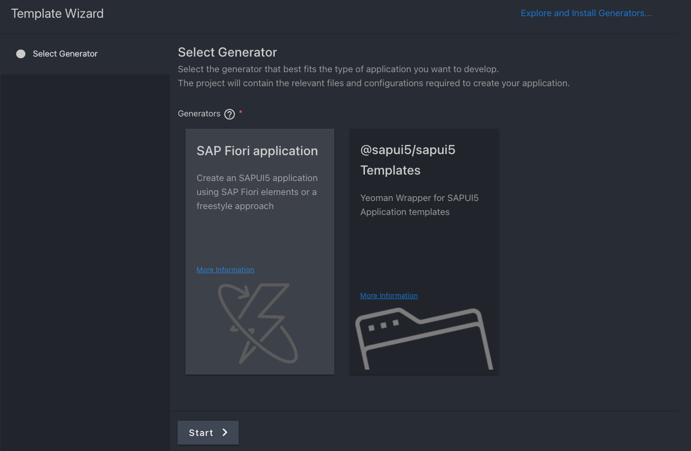
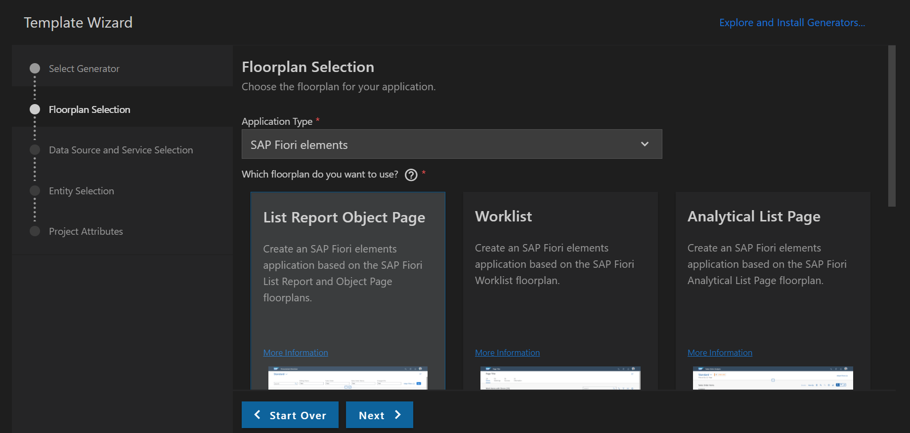
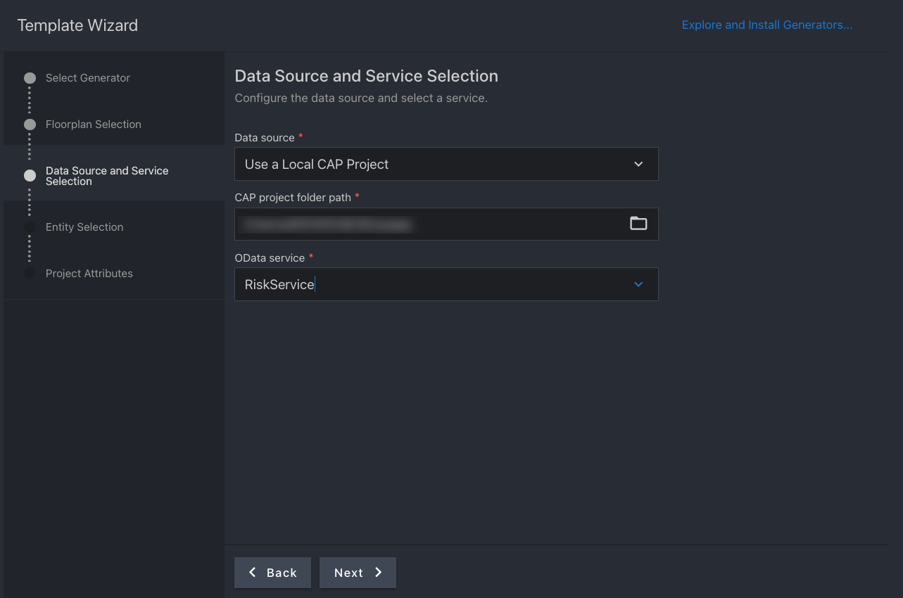
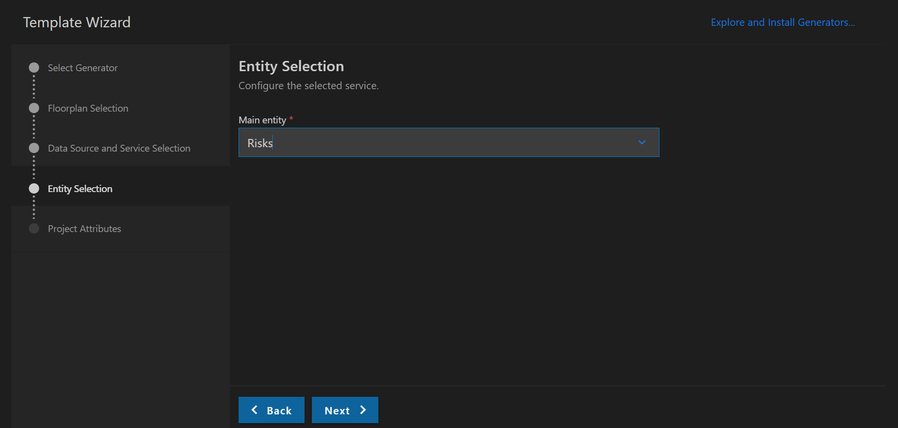
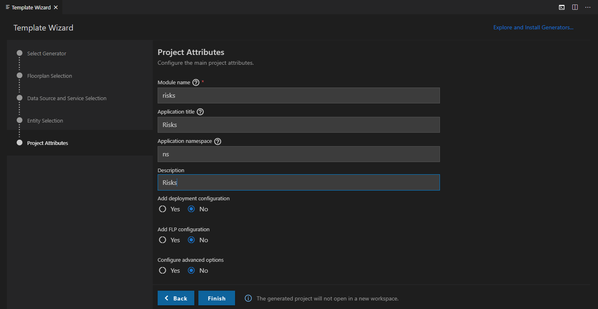
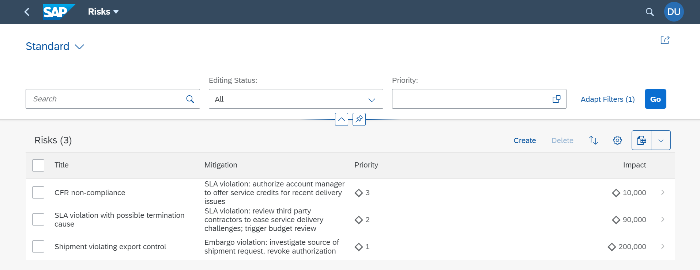
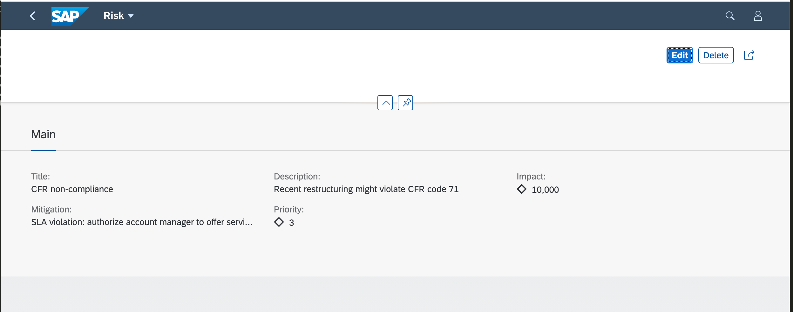

Create an SAP Fiori Elements-Based Application
Prerequisites
The results of the previous module Create a CAP-Based Service can be found here.
Additional Documentation
In this section, you create an SAP Fiori Elements (FE) app on top of your previously created CAP service.
An FE app is an application that leverages UI5, UI5 controls, and UI5 model view controller (MVC) concepts. In a plain UI5 or a freestyle UI5 app, all the views and controllers are part of your project. In contrast, in an FE app most of the code is outside of the project, managed centrally by the FE team. The code inside your project only references these central components. They take care of creating the UI according to the latest SAP Fiori design guidelines and cover all the controller logic for you out of the box. The UI can be influenced by OData annotations. They determine, for example, which properties of an OData service make up the columns of a table that displays the content of the service.
Generate the UI with an SAP Fiori Elements Template
-
In VS Code, invoke the Command Palette (View → Command Palette or Cmd+Shift+P for macOS / Ctrl+Shift+P for Windows) and choose Open Template Wizard.
-
Choose SAP Fiori application.

-
Choose Start.
-
Choose application type SAP Fiori elements and floorplan List Report Object Page.

-
Choose Next.
-
In the next dialog, choose Use a Local CAP Node.js Project and point to the folder of your current cpapp project.
In case you get the error:
Node module @sap/cds isn’t found. Please install it and try again.You might get the error
Node module @sap/cds is not found. Please install it and try again.after you've chosen your CAP project. This is an issue with the App Generator not finding the corresponding CAP modules, due to different repositories. This should be a temporary issue. For the meantime you can work around it by opening a command line and running the following command:npm i -g @sap/cds-dk --@sap:registry=https://npmjs.org/For more details see the CAP Troubleshooting guide.
-
Select the RiskService as the OData service and choose Next.

-
Select Risks as the main entity and choose Next.

-
Enter
risksas the module name andRisksas the application title. -
Enter "ns" as the namespace and "Risks" as the description for the application.

-
Choose Finish to generate the application.
The application is now generated and in a few seconds you can see it in the app folder of your project. It contains a risks and a webapp folder with a Component.js file that is characteristic for a UI5 app. However, the code there's minimal and it basically inherits its logic from the sap/fe/core/AppComponent.
Modify the UI with OData Annotations
-
If it's not still running from the previous section, execute
cds watchin a VS Code terminal and switch to http://localhost:4004 in your browser.You can now see that the CAP server has discovered an HTML page in your
appfolder:
-
Choose the link (/risks/webapp/index.html) for the HTML page.
-
On the launch page that now comes up, choose the Risks tile.
You can now see the application without any data.

The table is empty because the application is currently missing UI annotations. You add them in the next step.
-
To add the OData annotations, copy the file
risks-service-ui.cdsfromtemplates/cap/fiori-elements-app/srvto thesrvfolder of your app.As in the steps before, the CAP server has noticed the new file and compiled the service again, so now it contains the additional annotations.
-
In the browser, reload the page of the empty FE app.
-
Choose Go.
It now shows a work list with some columns and the data from the service.

If the work list doesn't show, you might have to clear your cache.
You’ve now already finished a full blown service and a UI application on top running locally.
Check the Annotation Files
Let's have a look at the new risk-service-ui.cds file and the annotations in there. At the beginning we see:
using RiskService from './risk-service';
annotate RiskService.Risks with {
title @title: 'Title';
prio @title: 'Priority';
descr @title: 'Description';
miti @title: 'Mitigation';
impact @title: 'Impact';
}
It's referring to the definitions of the earlier cds file that exposes the service and its Risks and Mitigations entities. Then it annotates the Risks entity with a number of texts. These should be in a translatable file normally but for now we keep them here. These texts are used as labels in form fields and column headers by FE.
Annotations for value help
The following section is needed for the value help of the Mitigation field that is visible when you're editing the object page of the Risks app.
annotate RiskService.Mitigations with {
ID @(
UI.Hidden,
Common: {
Text: description
}
);
description @title: 'Description';
owner @title: 'Owner';
timeline @title: 'Timeline';
risks @title: 'Risks';
}
Next up:
annotate RiskService.Risks with @(
UI: {
HeaderInfo: {
TypeName: 'Risk',
TypeNamePlural: 'Risks'
},
SelectionFields: [prio],
LineItem: [
{Value: title},
{Value: miti_ID},
{
Value: prio,
Criticality: criticality
},
{
Value: impact,
Criticality: criticality
}
],
Facets: [
{$Type: 'UI.ReferenceFacet', Label: 'Main', Target: '@UI.FieldGroup#Main'}
],
FieldGroup#Main: {
Data: [
{Value: title},
{Value: miti_ID},
{Value: descr},
{
Value: prio,
Criticality: criticality
},
{
Value: impact,
Criticality: criticality
}
]
}
},
) {
};
This defines the content of the work list page and the object page that you navigate to when you click on a line in the work list.
The SelectionFields section defines which of the properties are exposed as search fields in the header bar above the list. In this case, prio is the only explicit search field.
The columns and their order in the work list are derived from the LineItem section. While in most cases the columns are defined by Value: followed by the property name of the entity, in the case of prio and impact there’s also Criticality. It currently adds a diamond icon ( ♢ ) on the left in the fields. For now, you can neglect it but keep it in mind in case you go to the later modules.
Next up is the Facets section. In this case, it defines the content of the object page. It contains only a single facet, a ReferenceFacet, of the field group FieldGroup#Main. This field group just shows up as a form. The properties of the Data array within FieldGroup#Main determine the fields in the form:

The result of these steps can be found here.